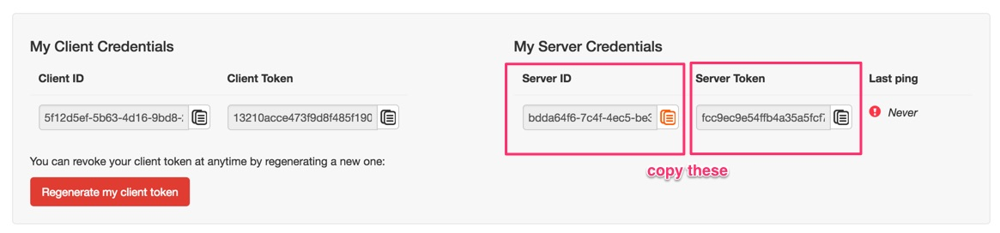

Blackfire.io
Blackfire.io is the preferred way by amazee.io to profile your Drupal sites. Over are the times to handle clunky weird xhprof configurations and other things.
At amazee.io we ship Blackfire with every Local Drupal Development site and it is enabled on all development and production sites.
It is easily configured and setup:
Initial Setup
- In order to use Blackfire.io you need an Blackfire.io account, which is completely free! Create one right now.
- Visit your Blackfire.io account and copy the
Server IDandServer Tokenfrom the My Server Credentials section (not the My Client Credentials section!)

Local Docker Development with Blackfire Chrome Companion
- Install the Blackfire Chrome Companion
- Find the commented Blackfire section inside your
docker-compose.ymlfile (see an example here) Uncomment the lines
BLACKFIRE_SERVER_IDandBLACKFIRE_SERVER_TOKENand add the information from your Blackfire.io account. Example:services: drupal: hostname: &hostname mysite.docker.amazee.io environment: BLACKFIRE_SERVER_ID: bdda64f6-7c4f-4ec5-be32-f1a6f5680cb0 BLACKFIRE_SERVER_TOKEN: fcc9ec9e54ffb4a35a5fcf7376f462eb85fe47e9fc978ed1df067c8b82afe500restart your Docker container if it is running:
docker-compose up -d --force-recreateVisit your local Docker site (in this example http://mysite.docker.amazee.io\)
Click on the Blackfire Chrome Companion Icon, select "Profile" and after a couple of seconds you will have local site profiled.
Read more at Analyzing Profiles about the Profiles that Blackfire generates.
Local Docker Development with blackfire CLI tool
Every amazee.io Docker image has the blackfire CLI tool already installed, so you can use that instead of the Chrome Companion. Learn more about the profiling of HTTP Request at the Blackfire documentation.
- Follow Steps 2-4 from Local Docker Development with Blackfire Chrome Companion
- Connect to the Docker Container
- Run the
blackfirecommand with defining the client-id and client-token from your your Blackfire.io account, example:blackfire --client-id="5f12d5ef-5b63-4d16-9bd8-2c741fe6a3ed" --client-token="13210acce473f9d8f485f19088f8b0b83c03bc2938efface72b9de1506ed211d" curl http://mysite.docker.amazee.io/
Development and Production sites
One of the greatness of Blackfire is the capability to profile on development and production sites without harm. This is possible as each request from a Blackfire client is authenticated via the Client-ID and the Client-Token and ensured that this client has the authority to profile a specific site. Plus the Blackfire PHP module does nothing when you are not profiling, so it does not add any overhead to a regular request.
In order to profile your development or production sites, just pass the amazee.io team your Server ID and Server Token from your Blackfire.io account, we will then deploy these keys to all your sites and you can start to profile in no time!
Triggering Blackfire Scenarios after deployments
Another great feature of Blackfire: You can profile and test fully automatically without you needing to do anything. Blackfire will tell you exactly if a deployment made your site faster or slower! This is an Enterprise feature only though, but they are worth the price, never has been automated profiling been easier. Talk to us if you are interested in a discount on Blackfire Enterprise!
Blackfire calls them Scenarios and they are based on Tests. Read more about them over at the Blackfire docs. After you have defined your Tests and Scenarios, you need to trigger them after a deployment. This happens within the .amazeeio.yml file within a deploy task.
The best practice is to add them add the last step within the after_deploy task list. Please see the Trigger API documentation from Blackfire on how to call a trigger via curl or the blackfire tool (which is also installed on all development and production sites).
Hint hint: the API needs to know the URL of the site to test via the endpoint parameter, we provide you the AMAZEEIO_BASE_URL environment variable which contains exactly that.